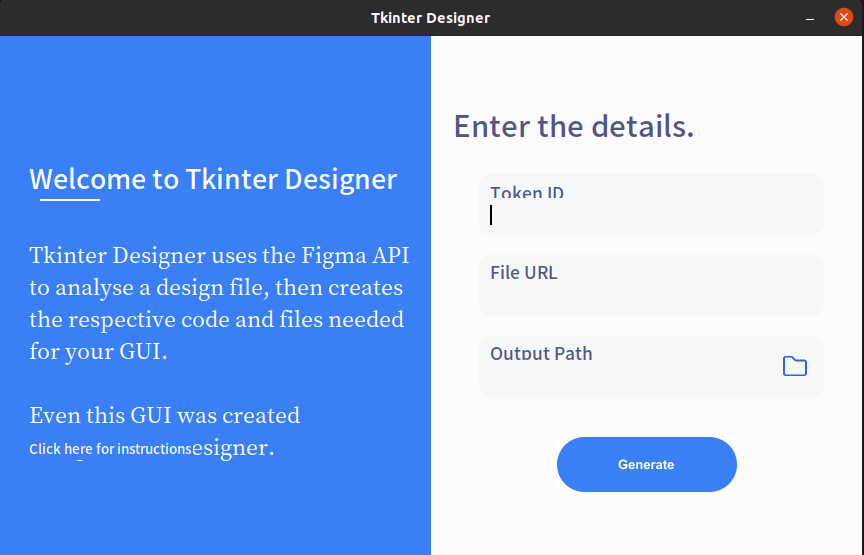
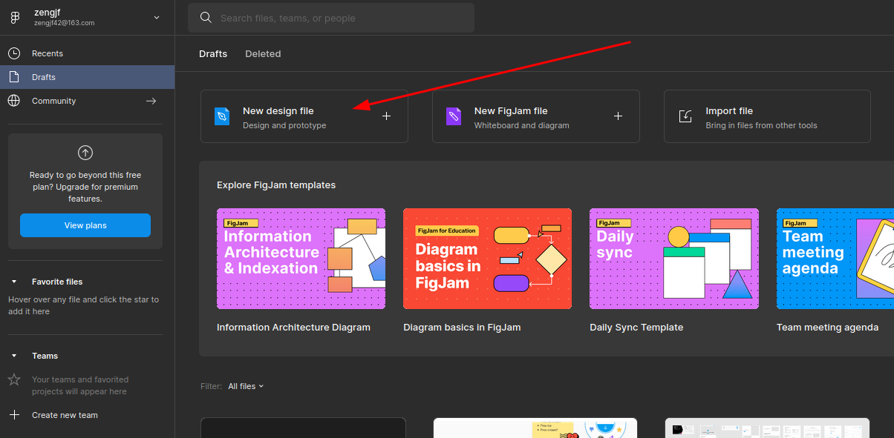
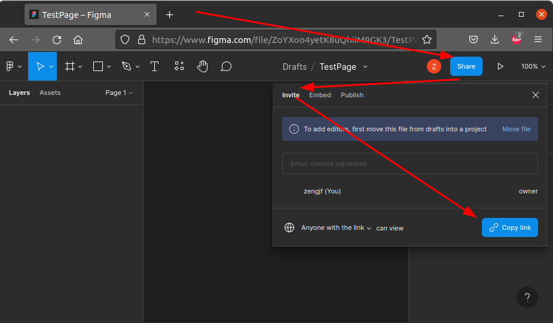
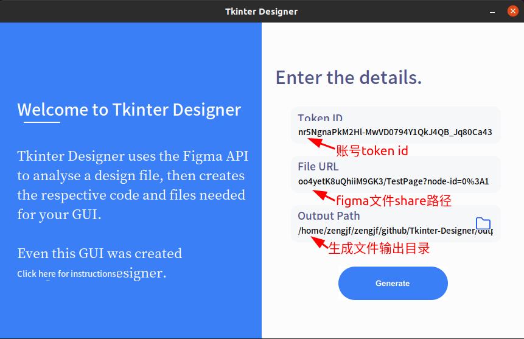
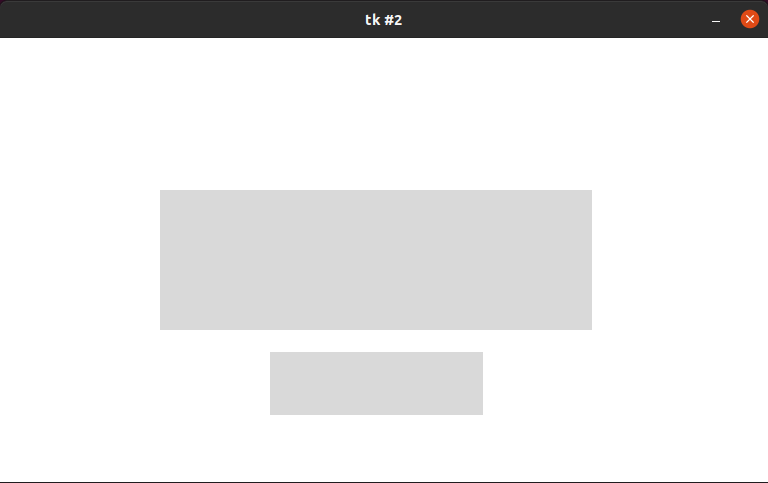

Tkinter-Designer
figma设计Tkinter界面
参考文档
https://github.com/ParthJadhav/Tkinter-Designer
tkdesigner
pip3 install tkdesigner
sudo apt-get install python3-tk
tkdesigner -h
usage: tkdesigner [-h] [-o OUTPUT] [-f] file_url token Generate TKinter GUI code from Figma design. positional arguments: file_url File url of the Figma design. token Figma token. optional arguments: -h, --help show this help message and exit -o OUTPUT, --output OUTPUT Folder to output code and image assets to. Defaults to current working directory. -f, --force If this flag is passed in, the output directory given will be overwritten if it exists.
git clone https://github.com/ParthJadhav/Tkinter-Designer
cd Tkinter-Designer/gui
python3 gui.py

token ID
[账户头像] -> [Settings] -> [Account] -> [Personal access tokens]
输入token描述，按Enter键，自动生成token
figd_qnr5NgnaPkM2Hl-MwVD0794Y1QkJ4QB_Jq80Ca43
New design file
创建设计文件

获取url: https://www.figma.com/file/ZoYXoo4yetK8uQhiiM9GK3/TestPage?node-id=0%3A1

转换
转换填写如下图

转换输出文件
.
└── build
├── assets
│ ├── button_1.png
│ └── button_2.png
└── gui.py
2 directories, 3 files
0007_TKinter-Designer
python3 build/gui.py
